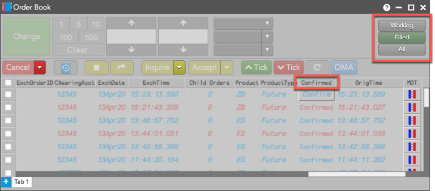
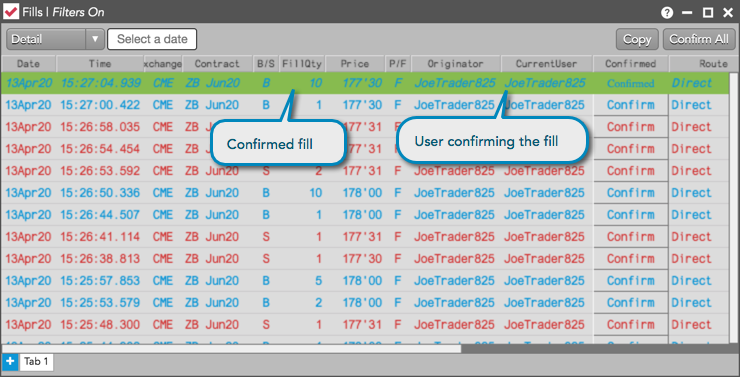

You can confirm a fill (e.g., parent order fill for a TT Algo) by using the Confirmed column and "Confirm" button in the Order Book widget or Order Book pane of the Orders and Fills widget.
To confirm a fill in the Order Book:

You can show/hide columns using the Order Book widget settings.
Tip: You can also right-click a column header and select "Edit columns" from the context menu.
Click the (Buy fill) or (Sell fill) button in the Confirmed column for a fill.
Tip: To confirm multiple fills, press and hold the Shift or Ctrl key and click multiple rows before clicking the Confirm button.
The fill is confirmed in the TT system and is highlighted in the "Confirmed Fill" color set in the Fills widget or Fills pane of the Orders and Fills widget. The Confirmed column displays "Confirmed" and your username is displayed in the CurrentUser column.
